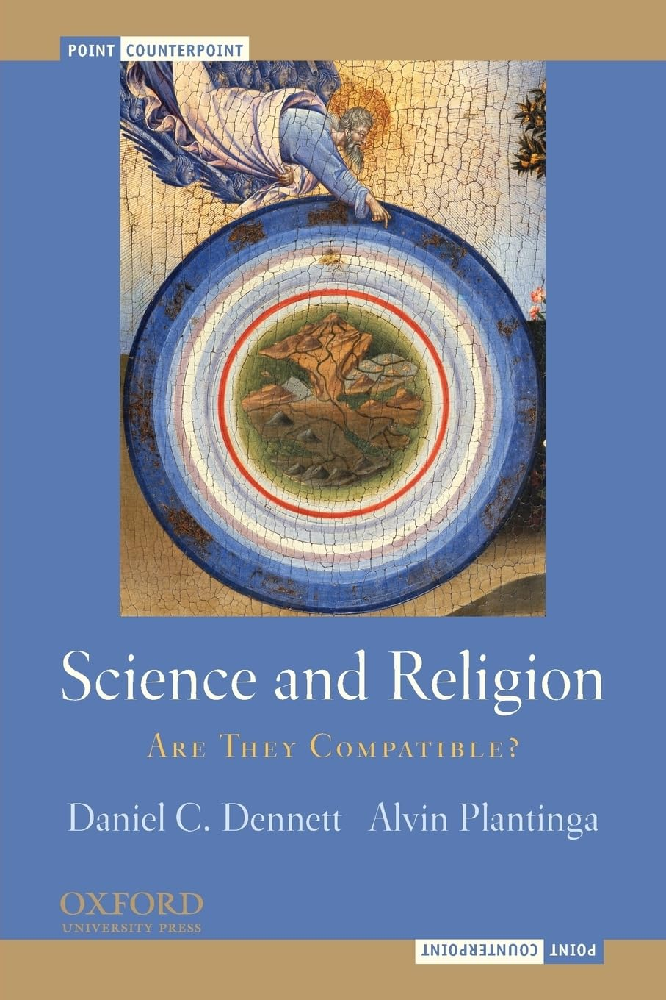

Naturalismo metafísico y fiabilidad de creencias teístas
Una mirada a las relaciones entre ciencia y religión a través del debate Dennett versus Plantinga
siendo niño, tuve yo un preceptor que me decía con la mayor solemnidad:
.Bertrand Russell, Ciencia y religión, trad. Samuel Ramos (México: Fondo de Cultura Económica, 1951), p. 55. Mientras escribía eso, en Tennesse era ilegal enseñar la teoría darwiniana de la evolución, porque se consideraba contraria a la palabra de Dios. Las relaciones entre ciencia y religión dieron lugar a debates entre los más afamados intelectuales. Para mencionar solo un par: pensemos en el debate de Oxford en 1860 entre Thomas H. Huxley y Samuel Wilberforce, o en el de 1948 entre Bertrand Russell y Frederick Copleston, radiado por la BBC. Hasta nuestros días, la pregunta persiste: ¿existen verdaderos conflictos entre el darwinismo y la Biblia?
Si eres darwinista, pobre de ti, porque es imposible ser darwinista y cristiano al mismo tiempo
En la actualidad, los filósofos Daniel Dennett y Alvin Plantinga han personificado este milenario debate. En 2009 se encontraron para una discusión pública del tema en la división central de la American Philosophical Association (las conferencias se publicaron luego en forma de libro). Por un lado, Plantinga ha sostenido que la religión y la ciencia son compatibles, y que el naturalismo es el que debe quedar fuera del esquema, puesto que se auto-refuta.Alvin Plantinga, Where the conflict really lies, (New York: Oxford University Press, 2011). Por otra parte, Dennett ha defendido el naturalismo filosófico y, en consecuencia, ha aducido que la religión y la ciencia son incompatibles.Daniel C. Dennett, La peligrosa idea de Darwin: Evolución y significados de la vida, trad. Cristóbal Pera Blanco-Morales (Barcelona: Galaxia Gutenberg, ); Romper el hechizo: La religión como fenómeno natural, trad. Felipe De Brigard (Buenos Aires: Katz Editores, ). Todavía no se ha alcanzado ningún consenso acerca de la postura con los mejores argumentos.
En este texto resumo y evalúo los argumentos de ambos autores. Primero me encargo de los puntos de vista teístas de Plantinga, y en particular, del Argumento Evolutivo contra el Naturalismo (EAAN), según el cual la conjunción de naturalismo y evolucionismo hace de todas nuestras creencias (incluso la creencia en el naturalismo) un producto de facultades cognitivas que no están garantizadas, puesto que no rastrean la verdad. Después me dedico a los planteamientos de Dennett en favor del naturalismo, y específicamente, su Argumento Evolutivo Subproductista Desacreditador de la racionalidad de la creencia teísta. La evaluación de las premisas de ambas partes revelará que Plantinga se equivoca al asumir de entrada que, si aceptamos el naturalismo, nuestras facultades cognitivas son poco fiables. Asimismo, criticaré el alcance de la postura de Dennett: incluso si la religión es un subproducto evolutivo, esto no socava la racionalidad teísta ni mucho menos la verdad de la creencia en Dios. Cierro diciendo que la religión y la ciencia sí son compatibles, y que el verdadero problema estriba en la interpretación filosófica y el tratamiento científico de nuestra natural tendencia al pensamiento mágico o religioso.
1. Argumentos de un teísta y un naturalista
Hablar exclusivamente acerca del debate entre Dennett y Plantinga sería restringirme a las palabras intercambiadas ese día en la APA. Es cierto que Plantinga y Dennett, al menos en esa sesión, no se refieren en general a La Ciencia
, y tampoco hablan universalmente acerca de todas las religiones del mundo. Solo incluyen explícitamente la creencia teísta de la religión cristiana y la teoría de la evolución por selección natural. Aun así, si consideramos a algunas de las religiones más influyentes, todas ellas tienen en común algún tipo de concepción ontológica mística o sobre-natural, y también se caracterizan por procurar la coherencia en sus doctrinas. Pero estas son, a la vez, debilidades y fortalezas: es una fuerza porque asegura que quien acepta una etapa del argumento debe aceptar todas las posteriores; es una debilidad porque quien rechaza cualquiera de las últimas etapas debe también rechazar todas las posteriores
.Russell, Ciencia y religión, 12–13. Así, por ejemplo, si interpretamos literalmente que Jesús nació de una mujer virgen (en realidad podemos pensar en cualquier milagro, como convertir el agua en vino, resucitar a los muertos, o lo que sugiera cualquier interpretación), y si lo que sabemos de biología —no de física, no de química— nos lleva a rechazar esta clase de eventos, entonces, en ese caso hipotético, no solo se atacaría a la totalidad de la creencia o la doctrina cristiana, sino que de paso rechazaríamos a Zoroastro y a la diosa babilónica Ishtar, de quienes también se dice que nacieron de alguna Santa Virgen. Poca diferencia haría que Dennett y Plantinga hubieran debatido acerca de la física y el islamismo. Según creo, la evaluación de lo debatido por estos dos filósofos podría tener implicaciones y ramificationes más allá de las cosas a las que ellos se refirieron directamente.
Desde luego, es apenas natural preguntarse: si se trata de un tema con amplia participación y abundante literatura ¿por qué solo hablar aquí de dos filósofos en particular? Por un lado, Dennett hace parte de los que en algún momento se denominaron como Los cuatro jinetes del ateísmo (conformado también por Dawkins, Harris y Hitchens). Los libros de este grupo se han vendido bastante bien y, a juzgar por las reseñas, han influido en la cultura popular. Decir algo en favor o en contra de alguno de ellos es relevante al menos en esa medida, y asimismo lo ha reconocido Plantinga. Por otro lado, Plantinga ha fundado la Sociedad de Filósofos Cristianos, y es uno de los padres de la actual desecularización de la filosofía. Incluso por sus críticos es considerado uno de los mejores epistemólogos. A su debate con Dennett asistieron otros reconocidos miembros de la comunidad filosófica, como Michael Tooley y Peter Van Inwagen. Puesto que Dennett ha sido internacionalmente influyente en el campo de la ciencia cognitiva y la filosofía de la mente, es razonable asumir que ambos filósofos son buenos exponentes de las posturas que representan en el debate. Esto me parece justificación suficiente de la elección. Lo mejor será ahora pasar revista a los puntos argumentales de las conferencias pronunciadas ese día.
1.1. Plantinga en favor de la compatibilidad entre ciencia y religión
En general, la agenda de Plantinga se compone de cuatro tesis. En primer lugar, afirma que la teoría contemporánea de la evolución no es incompatible con la creencia teísta. En segundo lugar, sostiene que los principales argumentos anti-teístas que involucran la evolución junto a otras premisas tienen todos ellos serias fallas. En tercer lugar, asevera que, incluso si la ciencia actual –evolucionista o no– fuera incompatible con la creencia teísta, de allí no se seguiría que ésta es irracional o injustificada (o que está envuelta en cualquier otro problema de este tenor). Por último, argumenta que el naturalismo es incompatible con la religión (y con el evolucionismo). Respecto al primer punto, Plantinga dice que los que sostienen que la evolución per se muestra que los humanos y otros seres vivos no han sido diseñados por una mente divina, aparentemente confunden la glosa naturalista sobre la teoría evolutiva, con la teoría misma. La conjunción del naturalismo con –literalmente– cualquier cosa, siempre implicará la negación de Dios. Las teorías científicas por sí solas no llevan a tal conclusión, y la creencia teísta parece ser consistente con los procesos de la teoría evolutiva. Dios podría haber dirigido estos procesos. Así, la religión está en conflicto con el naturalismo, no con la visión evolutiva (darwiniana) del mundo. A continuación, se desarrollan sus razonamientos en torno a los tres puntos restantes.
1.1.1. Fallas de argumentos anti-teístas que involucran la evolución.
Se ha dicho que la evolución socava el argumento del diseño y, por tanto, reduce el soporte racional (si es que hay alguno) del teísmo. Contra esa idea, Plantinga se apoya en Michael Behe para decir que, a nivel micro, es poco probable que algo tan complejo como la célula, es decir, todas las pequeñas máquinas proteicas de alta precisión al interior de la unidad fundamental de los organismos vivos, haya existido mediante un proceso no guiado. De cualquier manera, Plantinga estipula que el argumento del diseño o cualquier otro razonamiento teleológico no es la base de la creencia cristiana. Por ende, se puede dejar esto a un lado. Lo único que subraya Plantinga al respecto es que no todas las versiones del argumento del diseño han sido derribadas en la literatura filosófica (así lo mostraría la que se refiere al ajuste fino o la complejidad irreducible). Ahora bien, el así llamado problema del mal
ha recibido un segundo argumento anti-teísta que incluye la evolución en sus premisas. Parece que el proceso de la evolución, tan derrochador y productor de sufrimiento, no es el tipo de proceso que Dios usaría o permitiría. La teoría de la evolución conlleva el sufrimiento animal no-humano y la afirmación de que esto ha estado presente durante un largo periodo de tiempo en nuestro planeta. Esto, responde Plantinga, solo agrega más datos a un problema viejo, pero no plantea ningún problema nuevo. En consecuencia, puede replicarse –como se ha hecho desde hace tiempo– con oh felix culpa.
Un tercer argumento en esta familia de razonamientos anti-teístas y evolutivos consiste en el presunto resultado de la competencia de dos hipótesis. La evolución no guiada, como hipótesis, es superior a la hipótesis de que el proceso de evolución ha sido guiado u orquestado por mentes (divinas o no), puesto que así es más simple y más ockhamístico. Plantinga propone considerar los siguientes elementos:
- $D$ = La variedad de seres vivos se debe a procesos darwinianos;
- $E$ = La evidencia biológica relevante;
- $G$ = La evolución es guiada;
- $U$ = La evolución no es guiada.
Siendo esto así, entonces ¿cuál de las siguientes opciones (1 y 2) parece más probable?
- $[P(D \mid E \mathbin{\&} G)]$
- $[P(D \mid E \mathbin{\&} U)]$
Para Plantinga, la primera opción no parece muy problemática. Dios podría haber hecho las cosas mediante la vía darwiniana, y la evidencia biológica no contradice esta posibilidad. La segunda alternativa sí que tiene problemas. Plantinga considera que el problema difícil para el darwinismo sin guía no se encuentra en el desarrollo de órganos macroscópicos (como los ojos, cerebros y corazones) [… sino] en el nivel microscópico molecular: la asombrosa complejidad de la célula (tanto procariota como eucariota)
.Dennett y Plantinga, Science and religion, 13. De cualquier manera, a él no le parece que la cuestión esté bien direccionada cuando se la discute en estos términos. En su filosofía, la estructura noética teísta ya incluye, por supuesto, la existencia de Dios.
En relación con esa estructura noética, por lo tanto, no hay un costo adicional ockhamístico en la hipótesis de la evolución guiada. Para entender esto, propone un experimento mental. Si nos imaginamos un viaje a un planeta en el que viven criaturas inteligentes y hallamos algo bastante parecido a una punta de flecha (incluso con un par de ranuras y hendiduras), podríamos pensar en dos posibilidades para explicar su origen: o bien ese hallazgo es producto de -por ejemplo- la erosión, o bien fue intencionalmente moldeado por los habitantes de ese planeta. Alguien que haya leído un par de libros de filosofía se apresuraría a decir -quizá invocando la famosa navaja de Ockham- que la primera opción es mejor, ya que en ella participan menos entidades. No obstante -como ya sabemos- él o ella caería en un error. Dado que el planeta está habitado por seres inteligentes, no habría costo ockhamístico alguno si creemos que esas presuntas puntas de flecha han sido diseñadas. Lo mismo va para la evolución: los teístas aceptan de entrada el diseño divino y no incurren en ningún costo ockhamístico adicional pensando en la evolución como un proceso guiado. Con todo, no habría conflicto entre la creencia teísta y la ciencia evolutiva.
1.1.2. Una incompatibilidad entre ciencia y religión no afectaría la racionalidad de la creencia teísta
En este orden de ideas, Plantinga afirma que, incluso si fueran incompatibles ciencia y religión, eso no haría irracional o injustificada la creencia teísta. Si en biología o física o cualquier otra ciencia se comenzara a postular explícitamente que los procesos que acontecen en el mundo no son guiados de ninguna manera por un agente divino, se anexaría una proposición $N$ a un conjunto de proposiciones $Q$ para las que hay evidencia, pero esto no conferiría automáticamente evidencia a $N$. Desde luego, el naturalismo cree justamente en esta proposición $N$. Así, la evolución de los seres vivos es un conjunto de proposiciones $Q$ para los que existe suficiente evidencia, sobre la cual es racional aceptar la verdad de que la evolución ha sucedido efectivamente y, aún más, sería fundamental para considerar que este proceso ha ocurrido según los mecanismos indicados por Darwin y otros.
1.1.3. El naturalismo (no la ciencia) es lo realmente incompatible con la religión
Plantinga sugiere que, si bien el naturalismo no es una religión, cumple las funciones más importantes de una religión. Es una visión del mundo que sirve como un mito: nos provee de una manera de interpretarnos entre nosotros, una forma de comprender nuestro origen y significado en el sentido profundo en que lo hace una religión. Podríamos decir que el naturalismo es una cuasi-religión. Al igual que en muchas otras problemáticas de la filosofía, el mero uso de ciertos términos puede echar todo a perder si no se formula una definición apropiada, o al menos una que alcance cierto grado de consenso. Con el naturalismo sucede esto. Desde el punto de vista de Plantinga,Véanse Against Naturalism
, en Knowledge of God, ed. por Alvin Plantinga y Michael Tooley (Oxford: Blackwell Publishing, ), pp. 1–69; y también Evolution vs. naturalism. Why they are like oil and water
, Antimatters 2, no. 3 (): 79–84. el naturalismo es más fuerte que el ateísmo, puesto que excluye todo tipo de cosas inmateriales (o sobre-naturales) como el Absoluto Hegeliano, la idea platónica del Bien, el Yo Absoluto de Fichte y, desde luego, el omnipotente, omnisciente, omnibenevolente, omnipresente y quizá incorpóreo Dios de la religión cristiana. Esta concepción ontológica del mundo puede asumirse metafísica o instrumentalmente. Plantinga tampoco acepta que los científicos mantengan un naturalismo instrumental o metodológico; es solo un ateísmo provisional, ya que no acepta como científica ninguna hipótesis que invoque la acción divina.Alvin Plantinga, When faith and reason clash: Evolution and the Bible
, en Intelligent design, creationism, and its critics: Philosophical, theological, and scientific perspectives, ed. por Robert T. Pennock (Cambridge: The Massachusetts Institute of Technology Press, ), 113–145. Así, se rechazan ambas versiones del naturalismo, puesto que de una forma u otra llevan a la creencia según la cual no hay Dios, y nosotros los seres humanos somos partes insignificantes de una gigantesca máquina cósmica que procede con una majestuosa indiferencia hacia nosotros, nuestras esperanzas y aspiraciones, nuestras necesidades y deseos, y nuestro sentido del bien y del mal
.Plantinga, Evolution vs. naturalism
, 14. Es lo que vimos en De Rerum Natura, de Lucrecio, y lo que hasta los últimos años continuamos leyendo en los escritos de Russell, Quine y Dennett.
Para probar que es aquí —en el naturalismo— donde verdaderamente estriba el conflicto, tanto con la ciencia como con la religión, Plantinga postula el Argumento Evolutivo contra el Naturalismo (EAAN por sus siglas en inglés, Evolutionary Argument Against Naturalism
), donde:
- $N$ = Naturalismo;
- $E$ = Teoría contemporánea de la evolución;
- $F$ = Nuestras facultades cognitivas son fiables.
Con esto en mente, consideremos las siguientes premisas y su conclusión:Esta es la reconstrucción de Antonio Dieguéz, El argumento de Alvin Plantinga contra el naturalismo evolucionista: Un análisis crítico
, Éndoxa, no. 24 (2010): 336. Compárese con la presentación de Plantinga en Science and religion, 17.
Como es evidente, el argumento parte de la suposición de que hay creencias. Para un materialista, las creencias serían eventos o estructuras en el cerebro. Sería una estructura que involucra varias neuronas conectadas de diferentes maneras. Las estructuras responden a entradas de otras de esas estructuras, tales como los órganos de los sentidos y demás. También podría enviar señales a otras estructuras nerviosas, como los músculos o las glándulas, causando comportamiento. Decimos que estas estructuras tienen dos propiedades: neurofisiológicas $(PN)$ y mentales $(PM)$. Las propiedades mentales se adscriben con base en el hecho de que las creencias tienen contenidos. Así, hay al menos dos o tres maneras en que las PN y PM pueden relacionarse. En primer lugar, para el materialismo no reduccionista $(MN)$ las propiedades mentales $(PM)$ no pueden ser reducidas a propiedades físicas $(PN)$; aquellas se apoyan en éstas. Apoyan
debe entenderse de la siguiente manera: si dos entidades $X$ y $Y$ se diferencian en sus propiedades $A$, también se diferencian necesariamente en sus propiedades $B$. En segundo lugar, la necesidad puede ser lógica/metafísica $(MNL)$ o nomológica $(MNN)$. En tercer lugar, según el materialismo reduccionista $(MR)$, cada propiedad mental $(PM)$ es idéntica a alguna propiedad física $(PN)$. En síntesis, tenemos las siguientes opciones:
- $\{ P[F \mid N \mathbin{\&} E \mathbin{\&} (\text{MNL})] \}$
- $\{ P[F \mid N \mathbin{\&} E \mathbin{\&} (\text{MNL})] \}$
- $\{ P[F \mid N \mathbin{\&} E \mathbin{\&} (\text{MNN})] \}$
Dado que las criaturas han evolucionado, su comportamiento es adaptativo y también es adaptativa su neurofisiología. Pero a la selección natural -dice Plantinga- le importa un comino la verdad de una creencia. Premia comportamiento adaptativo. Nada más. Como dijo uno de los Churchland: la verdad, sea lo que sea, es lo último que se necesita. Por lo tanto, en un conjunto de 100 creencias independientes, siendo la probabilidad de cada una 50/50, la probabilidad de que tres cuartos de ellas sean verdaderas, que es un requerimiento modesto para la fiabilidad, sería menor a uno en un millón. La probabilidad de las dos versiones del materialismo no reduccionista $(MN)$ son bajas, porque no alcanzarían los tres cuartos que se necesitan para tener fiabilidad. Con el materialismo reduccionista $(MR)$ pasa lo mismo. En resumidas cuentas, si aceptamos el naturalismo $(N)$ y el evolucionismo $(E)$, no importa que concepción tengamos de lo que son las creencias, de cualquier manera, la fiabilidad $(F)$ de éstas es baja o inescrutable.
Para comprender el EAAN no basta con una definición general o tentativa de lo que es el naturalismo ni con una ligera discusión de lo que son las creencias. Debe incluirse también un aspecto muy importante en la epistemología de Plantinga: el concepto de garantía de una creencia (warrant).Alvin Plantinga, Is belief in god rational?
, en Rationality and religious belief, ed. por C. F. Delaney (Indiana: University of Notre Dame Press, 1979), 7‐27. Esta es una teoría de la justificación epistémica según la cual una creencia está garantizada
(warranted) si cumple al menos cuatro condiciones. En primer lugar, debe ser producida por facultades cognitivas que funcionan apropiadamente, trabajan como se supone que deberían trabajar, no están sujetas a un mal funcionamiento. En segundo lugar, el sujeto con estas facultades cognitivas que funcionan apropiadamente debe encontrarse en un ambiente cognitivo apropiado. En tercer lugar, el propósito o la función de estas facultades productoras de creencias es dar lugar a creencias verdaderas. En último lugar, el diseño de estas facultades cognitivas debe rastrear exitosamente la verdad. Para decirlo en pocas palabras: una creencia $B$ tiene garantía para un persona $S$ si y solo si $B$ es producido por facultades que funcionan correctamente en un ambiente apropiado de acuerdo con un plan de diseño dirigido con éxito a la verdad
.Plantinga, Evolution vs. naturalism
, 12. Ahora bien, por el contexto en que nos encontramos, la tercera de estas condiciones merece un par de líneas más. De acuerdo con Plantinga, una persona con una enfermedad terminal puede, no obstante, albergar la ingenua, reconfortante y falsa creencia de que se va a recuperar. En esa situación, se cumplirían las primeras dos condiciones estipuladas. Lo que hace incorrecta a esta creencia es que es guiada por la supervivencia, algo totalmente distinto a la verdad. Esa es la razón por la que las primeras dos condiciones no son suficientes para la garantía
de la creencia y debe agregarse una más.
Con esta lista de exigencias epistémicas cualquier puede preguntarse qué quiere decir Plantinga con función apropiada
. Es uno de los conceptos más importantes en su argumento y, como él mismo explica, es de hecho una de las nociones más importantes en nuestras vidas cotidianas ¿cómo distinguimos entre cordura y locura, entre salud y enfermedad, si no es con base en esta idea? Es la función apropiada
lo que conlleva la garantía. Contemplemos los ejemplos que Plantinga trae a colación:
mi refrigerador fue diseñado para mantener las cosas frescas; comienza a funcionar mal, su temperatura interior es constante de 150° F. Te lo doy, y lo usas para calentar la comida, como si fuera un horno. ¿Funciona mal o no? Mi parrilla se oxida y ya no puede ser usada para el propósito para el que fue diseñada (es decir, asar carne en una parrillada); mis nietos le pintan un diseño atractivo, y ahora es una maceta muy bonita: ¿funciona mal?
Lo que tienen en común todos estos casos es que la noción de una función apropiada requiere un diseño inteligente y, para el teísmo, el único diseñador plausible para nosotros los seres humanos y nuestros sistemas y órganos sería Dios, o algo muy parecido a Dios
.Ambas citas son de Plantinga, Evolution vs. naturalism
, 20. Las cursivas son mías. Esto nos lleva a si el teísmo cristiano es verdadero, entonces probablemente también está respaldado por las condiciones de las creencias garantizadas. Este no es un argumento en favor de la verdad de la creencia teísta, solo se refiere a la racionalidad de mantenerla.
Con todo, podemos ahora remontarnos a la combinación de naturalismo y evolucionismo, y notar que los conceptos recién discutidos harían poco fiables las creencias de una criatura en las condiciones -naturalistas- de evolución natural no guiada por diseñador alguno. Estaríamos todos en un caso más o menos similar al de la persona que, incluso en su enfermedad terminal, cree que se recuperará; en otras palabras, solo estaríamos guiados por la supervivencia, y ésta no es realmente una garantía para confiar en nuestras facultades cognitivas. En otro lugar Plantinga ofrece un ejemplo más extremo que sirve para poner de relieve lo que esto significa. Cuando vemos a Richard Dawkins y a Alfred Ayer conversando en Oxford, decimos que Dawkins cree que está en esa universidad conversando con su amigo; no obstante,
sus creencias podrían ser una especie de decorado que no tiene nada que ver con la cadena causal que lleva a la acción. Sus creencias cuando están despiertos podrían no ser más eficaces causalmente, con respecto a su conducta, que nuestras creencias cuando estamos dormidos con respecto a las nuestras. Esto podría suceder por medio de la pleiotropía: genes que codifican rasgos importantes para sobrevivir, también codifican la conciencia y las creencias; pero éstas últimas no figuran en la etiología a la acción. Podría resultar que una de estas criaturas creyera que está en esa elegante y alegre cena de Oxford, cuando de hecho está caminando esforzadamente por algún pantano primigenio, luchando desesperadamente con cocodrilos hambrientos.Alvin Plantinga, Warrant and Proper Function (New York: Oxford University Press, 1993), 223–224; citado en Michael Ruse, ¿Puede un darwinista ser cristiano? La relación entre ciencia y religión, trad. de Eulalia Pérez Sedeño y Eduardo de Bustos (Madrid: Siglo XXI, 2001), 126.
Aún quedan algunas cosas relevantes por fuera, tal como las creencias propiamente básicas en la estructura noética y la ciencia agustiniana
, una alternativa al naturalismo metodológico que sí acepta la existencia de los milagros. Por ahora, lo importante es que, mediante a su ataque al naturalismo, Plantinga ha respondido afirmativamente a la pregunta de la compatibilidad entre ciencia y religión. Cuando nos referimos a la evolución por selección natural y todos los mecanismos de especiación, es racional decir que es posible (epistémicamente posible) que así sea como las cosas hayan ocurrido; Dios pudo haberlo hecho de esa manera; pero la evidencia es ambigua. Está claro que es posible; que haya ocurrido es dudoso; y de cualquier manera, que sea cierto es ridículo
.Plantinga, When faith and reason clash
, 135.
1.2 Dennett contra la compatibilidad entre ciencia y religión
Desde hace varios años, Dennett ha dicho que el evolucionismo es como un ácido universal, una cosmovisión que corroe todo a su paso. Él considera que la idea de Darwin de la evolución por selección natural es -literalmente- la mejor idea que nadie haya tenido jamás, ya que de un plumazo une el significado con la materia
.Daniel C. Dennett, Bombas de intuición y otras herramientas de pensamiento, ed. Laura Lecuona (México: Fondo de Cultura Económica, ), 149. Por un lado, une todo eso a lo que se refería Plantinga, nuestras esperanzas y aspiraciones, nuestras necesidades y deseos
, es decir, nuestras mentes y sus significados (el Sentido de la Vida
), con los procesos puramente físicos y químicos que mantienen a los planetas girando y a las células trabajando. Esa idea, para expresarla sucintamente, consiste en aceptar que la vida en la Tierra se ha generado a lo largo de miles de millones de años en un solo árbol -el árbol de la vida- a partir de un proceso algorítmico u otro
.Dennett, Bombas de intuición, 108.
La naturaleza se compone de ciclos y ciclos de estos algoritmos y procesos, desde el relativamente simple paso del día a la noche, al mucho más enrevesado y complejo ciclo de Krebs. Cada uno de ellos se han repetido desde hace millones de años o bien emergieron de la repetición de reiteraciones primigenias. Dicho sea de paso, estos procesos son imperceptibles, incluso para los ojos de los animales más longevos. No hay que subestimar estos ciclos: si tomamos un palo y una piedra y los frotamos un par de veces, seguro no ocurre nada significativo; pero si lo hacemos 100 veces... tampoco ocurre algo notorio; con unos cuantos miles de intentos más, podríamos obtener un astil de flecha bastante recto. En este asunto pueden surgir dudas, pero es posible frenarlas con un hecho más o menos simple que a generaciones anteriores (antes de Ada Lovelace y de Alan Turing) les hubiera parecido inconcebible. Dennett subraya que la mera existencia de los ordenadores es una prueba cuya influencia ha sido innegable: existen mecanismos (mecanismos irracionales y en absoluto misteriosos que funcionan según principios físicos tan conocidos que forman parte de nuestra rutina) responsables de muchas de las competencias que solían atribuirse sólo a la mente
.Daniel C. Dennett, Dulces sueños: Obstáculos filosóficos para una ciencia de la conciencia, trad. de Julieta Barba y Silva Jawerbaum (Buenos Aires: Katz, , 21. No cabe duda de que existe una gran diferencia entre un robot humanoide y una calculadora de bolsillo, lo que dice Dennett es que para explicarla necesitamos el gradualismo de Turing, que consiste en una cascada de muchos niveles de diferentes competencias funcionales o ciclos, que se remontan a las capacidades de una máquina de registros con un par de instrucciones computacionales. Análogamente, necesitamos el gradualismo de Darwin para explicar la enorme diferencia entre un mandril y una manzana
.Dennett, Bombas de intuición, 77.
Así como no existe en las computadoras más avanzadas un homúnculo, un hombrecito sentado en un centro de mando, tampoco existiría en la naturaleza un Artífice guiando estos ciclos, sino solo una cascada de ciclos trabajando mecánicamente, conforme la iteración de algoritmos. Dennett propone el ejemplo ilustrado en la figura 2. A la izquierda, se observa un termitero catedral; a la derecha, la basílica La Sagrada Familia, una obra maestra de Gaudí. El artista ciertamente tenía sus razones para dar forma a esa estructura. Ahora bien, hay razones para las formas creadas por las termitas, pero las termitas no tienen esas razones
.Dennett, Bombas de intuición, 172. No existe una Termita Arquitecta. Así que una de dos, o definimos diseño
como lo que hace un Diseñador Inteligente (un ser supremo como Dios), o aceptamos que puede haber un genuino diseño sin un Arquitecto. El termitero proviene de los procesos enteramente naturales y repetitivos de varias hormigas (ninguna de las cuales tiene la menor idea de por qué están construyendo y de la forma particular que adquiere su edificación). La competencia sin comprensión, la Ignorancia Absoluta, puede tomar el lugar de la Sabiduría Absoluta. Lo mismo ocurre con la estructura de cada una de esas hormigas, las formas de las ramas de los árboles, y lo que hacen los virus y las bacterias. De hecho, de acuerdo con Dennett, lo mismo aplicaría para nosotros: somos robots hechos de robots hechos de robots, etc.
Es importante fijarnos en que esta duda darwiniana -apodada así por Plantinga haciendo referencia a la duda cartesiana del demonio que nos engaña- es donde estriba el conflicto entre Dennett y Plantinga (aunque todavía no entre la ciencia y la religión). Para Dennett y muchos otros científicos cognitivos habría que dar ese paso: tratar la mente como el metabolismo, la reproducción, el crecimiento, o las funciones de autorreparación y defensa. Entonces habremos explicado las corazonadas mismas. Después de todo, dice Dennett, la intuición es simplemente saber algo sin saber cómo llegaste a saberlo. Sí, la conciencia es algo maravilloso, pero no tan maravilloso; es decir, no tan maravilloso que no pueda explicarse con los mismos conceptos y teorías que han funcionado a la perfección para las demás áreas de la biología
.Dennett, Dulces sueños, 20. Se trata de miles de millones de engranajes neurales. La conciencia es como una pantalla de teléfono: es una ilusión del usuario del cerebro de sí mismo. Pero este no es el tema ahora. Como ya habrán anticipado, la respuesta de Dennett a la duda darwiniana implica poner también a las creencias religiosas en el saco del evolucionismo naturalista, es decir, considerar a la religión como un fenómeno natural que puede y debe estudiarse científicamente.Véanse también Alberto Ramírez-Téllez, La religión bajo la perspectiva evolucionista de Daniel Dennett
, Análisis 47, no. 82 (): 355–373; y Alberto Ramírez-Téllez y Wilson Hernando Soto Urrea, ¿Religión explicada? Debate en torno al concepto de Religión como
, Scientia et Fides 8, no. 1 (
fenómeno natural
de Daniel Dennett
Llegados a este punto, podemos detenernos a considerar dos intuiciones que seguramente cualquiera podría tener respecto al giro naturalista -o la extrapolación del naturalismo mecanicista [y puramente materialista] del cuerpo a la mente
.Dennett, Dulces sueños, 20. La primera de estas intuiciones se experimenta al contemplar el termitero catedral -es la misma sensación de Paley cuando se encuentra un reloj abandonado: decimos (intuimos) de inmediato que tuvo que ser diseñado. Esta intuición consiste en que la mente se niega a contemplar este universo, siendo lo que es, sin que haya estado diseñado
.Charles Darwin, The Life and Letters of Charles Darwin, Including an Autobiographical Chapter, ed. Francis Darwin (New York: Cambridge University Press, ), 313–314. Asimismo, parece ser una dificultad extrema, o más bien una imposibilidad, concebir este inmenso y maravilloso universo, incluyendo al hombre con su capacidad de mirar hacia atrás y hacia el futuro lejano, como el resultado de una casualidad
.Darwin, Life and Letters, 312. La cursiva es mía. Siempre que Darwin se inclinaba a concebir todo como producto de una Causa Primera, a saber, un diseñador supremo como Dios, era invadido por una horrible duda
: ¿es posible confiar en la mente del hombre, que, como estoy plenamente convencido, ha sido desarrollada a partir de una mente inferior como la que poseen los animales más inferiores, cuando extrae conclusiones tan grandiosas como esta?
,Darwin, Life and Letters, 312. ¿se fiaría alguien de las convicciones de la mente de un mono, en el caso de que una mente como la suya pudiera albergar convicciones?
.Darwin, Life and Letters, 316.
1.2.1. La religión como subproducto evolutivo
En el sentido en que Dennett habla de fenómeno natural
, todo lo que cotidianamente consideramos artificial sería natural: la presa de Asuán no es menos natural que una presa construida por un castor y la belleza de un rascacielos no es menos natural que la belleza de un atardecer. Las ciencias naturales toman como tema todo lo que existe en la naturaleza, y esto incluye tanto junglas como ciudades, pájaros y aeroplanos, lo bueno, lo malo, lo feo, lo insignificante, y también todo lo que es importante
.Dennett, La peligrosa idea de Darwin, 47. Desde esta perspectiva naturalista, podría decirse que las religiones son sistemas sociales cuyos participantes manifiestan creencias en agentes sobrenaturales o en agentes cuya aprobación ha de buscarse
.Dennett, La peligrosa idea de Darwin, 27. Es una definición tan provisional como la que nos da Plantinga del naturalismo. Podemos trabajar con este concepto rudimentario y aceptar que las religiones, como cualquier otro sistema social, no siempre han estado con nosotros. Hubo un tiempo en que no había ninguna clase de creencia o práctica religiosa. Quedaría abierto el interrogante de cuáles son las raíces de la religión, cómo aparecieron todas ellas. En términos psicoevolutivos, la materia prima de la religión es -lo que en la jerga dennettiana se denomina como- la actitud o postura intencional. Esta estrategia consiste en interpretar la conducta de cualquier entidad (persona, animal, artefacto o lo que sea) tratándola como si fuera un agente racional, que determina sus elecciones de acción considerando sus creencias y deseos.
Vale la pena aclarar que la postura intencional es acerca de lo cual los agentes están pensando y que no es algo que adoptemos intencionalmente; de hecho, casi siempre es involuntario, se escapa de nuestro control, como bien muestran las intuiciones a las que ya aludimos. El mundo es muy peligroso para todos los seres vivos. Una habilidad fundamental para la supervivencia es reconocer o saber distinguir entre lo vivo y lo no vivo, y el movimiento autogenerado suele ser un criterio fiable en situaciones de riesgo. Los humanos hemos llegado bastante lejos en la carrera armamentista de este dispositivo detección de agentes. Se ha convertido en algo hiperactivo para nosotros. Cuando un perro se para de un brinco y gruñe a la nieve que acaba de caer del alero, produciendo un ruido sordo que lo despierta de su siesta, él está manifestando una respuesta, disparada por su dispositivo, pero orientada hacia un falso positivo
.Dennett, La peligrosa idea de Darwin, 140. En la cosmovisión naturalista, lo que en realidad resulta poco fiable es creer en este tipo particular de sesgo cognitivo que, dicho sea de paso, ha sido extensamente documentado en la literatura de investigación sobre humanos y animales no humanos. Esta es la materia prima por que nacemos con un dispositivo de detección de agentes, y se activa a la menor provocación. Cuando falla, lo que a menudo ocurre en circunstancias estresantes, tendemos a ver fantasmas, duendes, diablillos, hadas, gnomos, genios y otros seres por el estilo ahí donde todo lo que realmente hay son ramas agitadas por el viento, paredes de piedra inclinadas o puertas chirriantes
.Dennett, Bombas de intuición, 63. Las religiones serían -entre otras cosas- un sub-producto de la evolución de la falsa creencia y de la actitud intencional.
En síntesis, el ataque de Dennett se dirige al menos a dos frentes. En primer lugar, ofrece argumentos en contra de la existencia de Dios (o bien refutaciones de los argumentos en favor de la existencia de Dios), como los planteados a partir de la posibilidad de creación sin creador. En segundo lugar, propone una explicación a por qué en primera instancia alguien apoyaría una proposición tan dudosa (como la de la existencia de Dios). Debido al estilo o tradición filosófica a la cual Dennett pertenece, es poco frecuente encontrar en su obra argumentos igualmente esquemáticos como los de Plantinga, con las premisas claramente expresadas y enumeradas, junto a las reglas de inferencia explícitamente señaladas. No obstante, Kahane reconstruye argumentos como el de Dennett de la siguiente manera:Guy Kahane, Evolutionary debunking arguments
, Noûs 45, no. 1 (2011): 111.
Dennett consideraría que $X$ es la conjunción del dispositivo de detección hipersensible de agentes, de un dispositivo para la atribución de estados mentales (lo que en psicología se conoce como teoría de la mente
o ToM, Theory of Mind, aunque Dennett prefiere solo denominarlo postura intencional
), y de un dispositivo para la rápida y automática clasificación de objetos en categorías (que facilita el almacenamiento en la memoria). Siguiendo a Merchán, podemos denominar este tipo de argumentos contra la racionalidad de la creencia teísta como argumento evolutivo desacreditador subproductista
, o simplemente argumento subproductista
.Jorge Sierra Merchán, ¿Son válidos los argumentos evolutivos desacreditadores subproductistas de Dennett contra la racionalidad del teísmo?
, Eidos: Revista de Filosofía de la Universidad del Norte, no. 26 (): 178-209.
2. Evaluación y crítica de los argumentos
La evaluación y crítica de los argumentos aducidos por ambas partes demanda, en primer lugar, establecer los puntos de contacto. Desde la perspectiva de Dennett,Dennett y Plantinga, Science and religion, 26–27. las proposiciones verdaderas del profesor Plantinga serían las siguientes:
- La teoría contemporánea de la evolución es compatible con la creencia teísta.
- No hay ninguna parte en la presente teoría evolutiva que diga que las mutaciones son aleatorias en el sentido de que ocurren porque sí, al azar, sin guía alguna.
- El naturalismo y la teoría evolutiva juntas implican la negación del diseño divino, pero la biología evolutiva por sí sola no tiene esta implicación.
Aunque Dennett considera que hay tres tesis centrales de Plantinga que son verdaderas, observa que éstas no apoyan su más amplio proyecto teísta. La razón por la que no apoyan el gran proyecto teísta es que lo mismo que dijo Plantinga de Dios guiando la evolución lo podríamos decir de Superman (el hijo de Jor-El) guiando la evolución. Análogamente, no se puede descartar que unos visitantes intergalácticos hayan manipulado el ADN de las especies terrestres. Esto -también- es perfectamente posible en el amplio sentido del término. En esta línea de ejemplos, Dennett propone el caso (imaginario) del asesinato de Fred, un desagradable crítico de arte:
publicó una crítica de una exposición de arte de Tom, y fue encontrado muerto en su apartamento al día siguiente, con la cabeza golpeada por una de las esculturas de Tom, que yace empapada en sangre junto al cadáver, con la crítica publicada sobre el cuerpo de Fred.Dennett y Plantinga, Science and religion, 30.
Aunque todos en la corte pensaron que Tom sería hallado culpable sin complicaciones, la defensa tiene un as bajo la manga. Resulta que la escultura de Tom le pertenecía a Fred, como de hecho puede apreciarse en una fotografía tomada hace una semana, donde la escultura está en una repisa sobre el escritorio de Fred. Además, el día de la muerte había ocurrido un sismo alrededor de las 9:00 A.M. , hora en que Fred usualmente está en el escritorio leyendo el periódico. No hay evidencia de que Tom haya estado en algún lugar cerca. Parece entonces que la muerte se debe a una causa natural (la escultura cayó de la repisa), no a un autor intelectual. Sin embargo -añade Dennett- el fiscal no ha terminado. Llama a un experto: el profesor Alvin Plantinga. Para él, la defensa solo ha mostrado que lo ocurrido podría haber sido un accidente, pero no que fue un accidente. Es enteramente razonable -continuaría Plantinga- que Tom haya asesinado a Fred. Plantinga no estaría negando que ocurrió un leve sismo, pero Tom podría haber previsto que ocurriría e incluso podría haberlo causado, aunque nada en la geología por sí sola -y por cuánto sabemos- niegue la posibilidad de que esto pueda pasar si uno lo desea lo suficiente. En suma, Plantinga diría que es el naturalismo combinado con lo que sabemos de geología lo que sugeriría que Tom es inocente.
A partir de esta respuesta de Dennett a Plantinga podemos comenzar la crítica a un par de errores frecuentes en los escritos de Dennett. En efecto, como muestra Dennett, hay proposiciones realmente tontas que son compatibles con la ciencia. Sin embargo, es necesario resaltar que Plantinga se atuvo al tema de discusión y mostró que Dios pudo haber intervenido en la evolución. Esa proposición es compatible con el darwinismo. El error de Dennett es haber creído que solo esa proposición es la única del teísmo. Si así fuera, entonces ciencia y religión solo serían compatibles bajo la costosa condición de creer algo que es realmente improbable, implausible o incluso tonto (como creer en Superman y que él intervino en la evolución). Desde luego, cualquier hipótesis como la de Superman sería increíblemente tonta, pero el punto central es que Dios no tiene las características que se le atribuyen a estos sujetos hipotéticos. El segundo punto de Dennett que podemos corregir (y que está en favor de Plantinga) es la apelación a que, en lugares como las cortes penales o las instituciones científicas, se asume que el naturalismo es verdadero. Esto es obviamente falso. Para hacer su trabajo, un físico no asume -no tiene por qué asumir- que no existe Dios. De hecho, hay varios físicos que son creyentes, y que confían en que su exploración y explicación de las leyes del universo son de hecho una forma de acercarse a Dios.
2.1. El spandrelismo no socava la creencia teísta
Los humanos necesitamos pensar con modelos causales y, en el proceso, podemos cometer dos tipos de errores, o bien podemos acertar en dos sentidos. Un error de tipo 1 sería creer algo falso y un error de tipo 2 sería rechazar algo verdadero; un acierto de tipo 1 sería no creer algo falso y un acierto de tipo 2 sería creer algo verdadero. Es natural que, dadas estas posibilidades, nuestro aparato de creencias genere algunas creencias de más, pero no solo las religiosas o mágicas. Incluso el evolucionista debe aceptar que, en nuestra necesidad de hallar modelos causales, necesariamente desarrollaremos otras tendencias a generar creencias. Pero el creyente no incurre en un error de tipo 2, no está rechazando algo verdadero (la evolución de las especies). Lo que para un evolucionista es el componente de pensamiento mágico del motor de creencias
, para un teísta como Plantinga puede ser el sensus divinitatis, la habilidad que el mismo Dios habría otorgado a las facultades humanas innatas para que puedan formarse la idea de un ser como él. Por tanto, la racionalidad de la creencia teísta, si bien no está intacta, todavía no habría sido socavada por completo (como sí lo considera Dennett).
2.2. La primera premisa del EAAN es falsa
La primera premisa del EAAN es simple y llanamente falsa. Esto es algo que podemos conceder a Dennett. En la bio-esfera no habría mucho mercado
para dispositivos cognitivos de baja fiabilidad. No progresarían. Si nuestro alcance cognitivo fuera tan limitado como insinúa Plantinga, no seríamos capaces ni siquiera de trazar una línea recta. De hecho, esta capacidad es bastante interesante por cuanto nunca trazamos líneas rectas perfectamente rectas con nuestras manos. El perfeccionamiento de esa capacidad se debe a la aproximación filogenética y ontogenética; es producto tanto del artefacto como de la idea misma. El naturalismo no se refuta a sí mismo, o por lo menos no ocurre eso con base en las premisas del EAAN. La epistemología evolutiva es falibilista pero no ultra pirrónica. Ciertamente, como dice Popper, los animales pueden conocer: pueden tener conocimiento. Un perro, pongamos por caso, puede saber que su amo vuelve del trabajo a las seis de la tarde; el comportamiento del perro puede ofrecer muchos indicios, claros para sus amigos, de que espera el regreso de su amo a esa hora … pese a su trivialidad, la proposición los animales pueden conocer revoluciona por completo la teoría del conocimiento
.Karl Popper, Un mundo de propensiones (Barcelona: Tecnos, ), 58.
Consideraciones finales
A partir de lo discutido ¿dónde estriba realmente el conflicto (si es que hay alguno) entre ciencia y religión? ¿estaría -como al parecer piensan tanto Plantinga como Dennett- en la presunción de que el naturalismo es necesario para la ciencia? Los aciertos y errores de ambos pensadores nos dejan con más preguntas y problemas abiertos que son soluciones directas al problema de la relación (de compatibilidad o incompatibilidad) entre las ciencias y las religiones. Sin embargo, a efectos prácticos parece que la balanza se inclina en favor de la compatibilidad. Podemos concluir esto a partir de la evaluación de los puntos comunes entre ambos pensadores (más precisamente, por la primera y tercera proposición de la tercera sección).
En vista de que la ciencia per se no entra en conflicto con las doctrinas religiosas (al menos no con la asumida por Plantinga), un científico y un lego puede estar plenamente justificado en aceptar tanto los descubrimientos de las ciencias como en creer lo que dice la Biblia. De manera que el conflicto sí radica en que se demuestre como verdadero el naturalismo. Además de esto, creo que existe un punto de potencial conflicto entre religión y ciencia que, no obstante, no se ha señalado como tal en la literatura sobre el tema. Ese aspecto que faltaría considerar más extensamente es la doble interpretación que recibe nuestra natural tendencia a creer en entidades divinas. Está claro que el argumento subproductista no ataca (directamente) la verdad de la creencia teísta, pero sí fractura la racionalidad de esta. Si bien he dicho que la justificación teísta no es totalmente refutada, el argumento subproductista sí obliga al teísta a buscar otra justificación más allá de la apelación de Plantinga a unas supuestas creencias propiamente básicas en la estructura no-ética del sujeto. Éstas resultan sospechosas porque existe la posibilidad de que se deban meramente a un sesgo cognitivo.